Dự án 1: Automation AI Video Production
Tổng quan dự án
Trong ngành thời trang, việc sản xuất video quảng cáo truyền thống đòi hỏi ngân sách rất lớn cho studio, người mẫu và đội ngũ hậu kỳ. Để giải quyết bài toán về chi phí, dự án này triển khai một dây chuyền sản xuất video AI hoàn toàn tự động. Hệ thống nhận đầu vào là ảnh sản phẩm cùng kịch bản (prompts), tự động hóa toàn bộ luồng giao tiếp với nền tảng tạo video KLING AI, lưu trữ thành phẩm thô, và luân chuyển tiếp sang công cụ Symphony để hoàn thiện công đoạn ghép cảnh và chèn phụ đề. Giải pháp này chuyển đổi quy trình sản xuất media phức tạp thành một hệ thống tự động vận hành xuyên suốt 24/7.
 Ảnh đầu vào
Ảnh đầu vào
 Video thô (KLING AI)
Video thô (KLING AI)
Thành phẩm (Symphony)
1. Xây dựng Luồng Tự động hóa Sản xuất Video bằng AI (Kling RPA)

Cơ chế hoạt động và xử lý:
Tự động hóa giao diện web bằng Selenium Stealth (giải quyết rào cản thiếu API)
Phân loại và định tuyến tác vụ (Kling Model 1.6 cho Pose, 2.1 cho Move)
Giám sát Credit: chủ động "ngủ đông" khi cạn và tự khôi phục luồng
Loại bỏ thời gian chờ cố định (10-40s), chuyển sang giám sát trực tiếp cây DOM
Bắt tín hiệu và tải video ngay khi render hoàn tất
Đánh dấu Checkpoint tức thì
Bảo toàn tiến trình, chống trùng lặp dữ liệu và chuyển tiếp tác vụ.
2. Xây dựng Luồng Tự động hóa Hậu kỳ (Symphony RPA)

Cơ chế hoạt động và xử lý:
Tự động hóa giao diện qua Selenium Stealth (khắc phục rào cản thiếu API)
Triển khai Hybrid Auth (vượt Anti-Bot bằng cơ chế ưu tiên tái sử dụng cookies)
Đồng bộ dữ liệu động từ Google Sheets (tự động hóa đầu vào render)
Thiết lập cơ chế tự phục hồi (chủ động bắt lỗi nền tảng Symphony và tái kích hoạt Generate)
Giám sát trực tiếp cây DOM (tối ưu tốc độ, loại bỏ thời gian chờ thụ động)
Xác thực file .mp4, phân luồng lưu trữ và đánh dấu Checkpoint (bảo toàn tiến trình, chống xử lý trùng lặp).
Thách thức lớn nhất
▪ VẤN ĐỀ: Tối ưu thời gian Render
Thời gian xuất video KLING AI thất thường gây lãng phí.
▸ GIẢI PHÁP: Dùng cơ chế chờ động (DOM Polling) tự động tải video ngay khi hoàn tất.
▸ GIẢI PHÁP: Dùng cơ chế chờ động (DOM Polling) tự động tải video ngay khi hoàn tất.
▪ VẤN ĐỀ: Xử lý giao diện động
Giao diện Symphony biến động liên tục gây lỗi khi dùng XPath.
▸ GIẢI PHÁP: Kết hợp Phím tắt (Shortcuts) và cơ chế Retry-catch, đảm bảo thao tác chuẩn xác dù trình duyệt giật lag.
▸ GIẢI PHÁP: Kết hợp Phím tắt (Shortcuts) và cơ chế Retry-catch, đảm bảo thao tác chuẩn xác dù trình duyệt giật lag.
▪ VẤN ĐỀ: Tương thích đa môi trường
Script dễ lỗi khi đổi độ phân giải hoặc hệ điều hành.
▸ GIẢI PHÁP: Chuẩn hóa tọa độ và kiểm thử chéo, đảm bảo ổn định 100% trên mọi cấu hình máy đối tác.
▸ GIẢI PHÁP: Chuẩn hóa tọa độ và kiểm thử chéo, đảm bảo ổn định 100% trên mọi cấu hình máy đối tác.